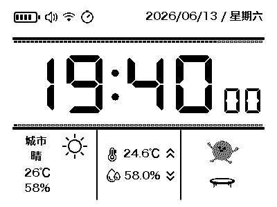
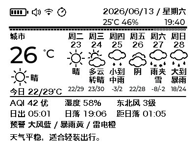
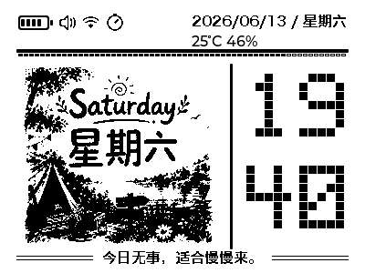
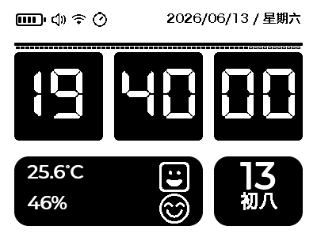
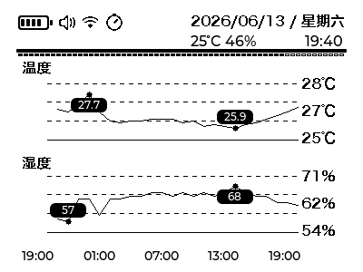
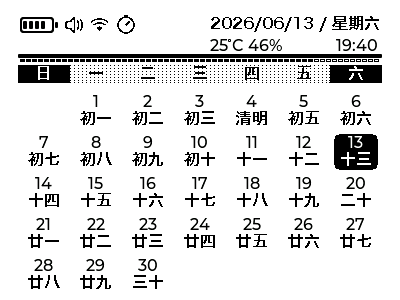
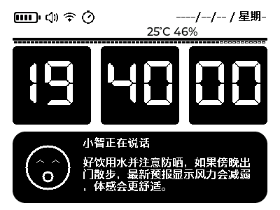
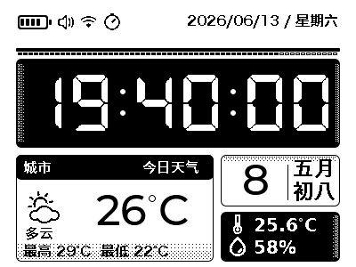

GIF 动图84 x 84 / 60 帧
静图220 x 208 / 最多 24 张
资源包可同时包含 GIF 动图和静图；写入设备后重启，固件会优先加载自定义资源。
GIF 动图
原始 GIF

转换预览
静图
原图裁切
转换预览
尚未选择静图。
交互模拟器
LVGL + SDL2 · WebAssembly（Emscripten）
等待加载模拟器构建信息
虚拟设备
KEY：短按选择，长按 1.2 秒返回
BOOT：短按切页 / 确认
模拟器加载中
虚拟配网
独立假数据演示静态预览对照








快捷配置链接
先让设备进入配网模式并连接设备热点，再在浏览器访问链接。访问即保存并尝试联网，不保证连接成功。
信息仅在本地生成，不上传服务器、不自动保存输入。链接包含明文 Wi-Fi 密码和 API Key，编码不是加密。
请妥善保管链接，切勿泄露或公开分享。浏览器历史、剪贴板及分享记录可能留存这些信息。
资源包兜底配置
天气城市兜底
仅填写城市名；设备 NVS 已保存手动城市时，会优先使用设备端配置。
OTA 清单兜底
留空时不写入；填写服务器基础地址会自动规范化到 /firmware/latest.json。
连接未连接
设备未选择
接收0 B
最近日志-
等待连接设备串口...
已选设备未选择
芯片等待核对
MAC-
分区核对未核对
| 名称 | 类型 | 偏移 | 大小 | 状态 |
|---|---|---|---|---|
| 选择设备后读取分区表。 | ||||
等待资源包0%
生成资源包后，请先读取设备分区表，再写入设备 assets 分区。
已选设备未选择
芯片等待读取
MAC-
App 分区未读取
| 名称 | 类型 | 偏移 | 大小 | 状态 |
|---|---|---|---|---|
| 选择设备后读取分区表；App 写入只允许 ota_0 / ota_1。 | ||||
等待固件文件0%